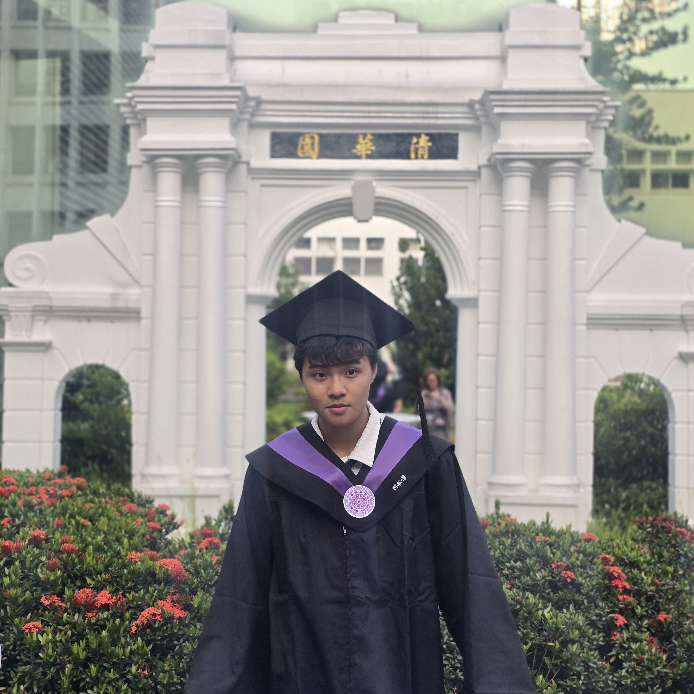
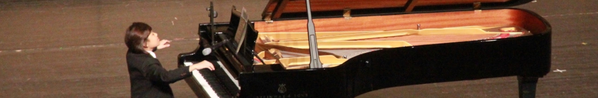
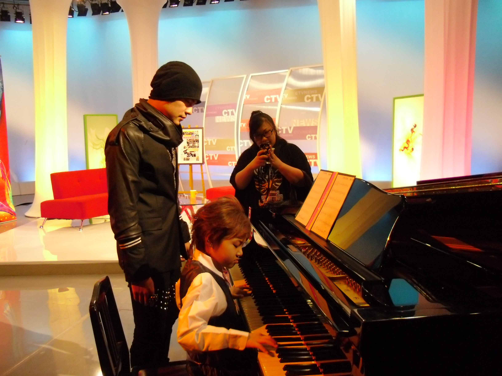

PitchBench: Measuring Pitch Hearing in Audio-Language Models
Evaluating pitch hearing in audio-language models through controlled experiments across sequences, chords, instruments, and acoustic conditions.

A musician & music/audio ML researcher, Actively seeking Fall 2027 CS PhD.
I’m a Computer Science student at UC Berkeley and NTHU. My work focuses on music understanding for audio-language models, and controllability for music generation and audio effect design.
I work with BAIR under Prof. Trevor Darrell and David M. Chan, CNMAT under Prof. Carmine-Emanuele Cella, and the NTU Music and AI Lab under Prof. Yi-Hsuan (Eric) Yang.
My long-term goal is to build ALMs that can perceive and reason about music, while giving musicians more direct and expressive ways to interact with generative systems.

Before research
I performed 24 solo recitals and appeared on television more than 70 times across China and Taiwan. I still perform, compose, and produce; that perspective shapes the research questions and tools I choose to build.

Evaluating pitch hearing in audio-language models through controlled experiments across sequences, chords, instruments, and acoustic conditions.
Introduces sequential FX refinement: given the current effect state and a new instruction, update the sound while preserving what earlier instructions have already achieved. InstructFX2FX combines LLM planning with CLAP-guided optimization for iterative, multi-turn audio effect design.